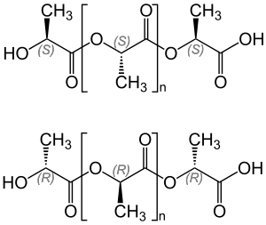
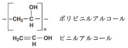
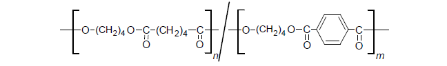
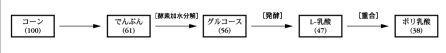
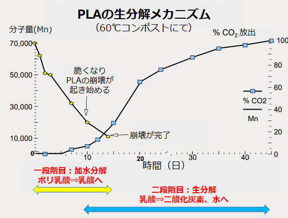
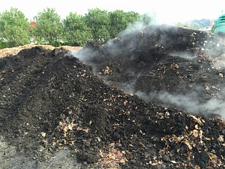
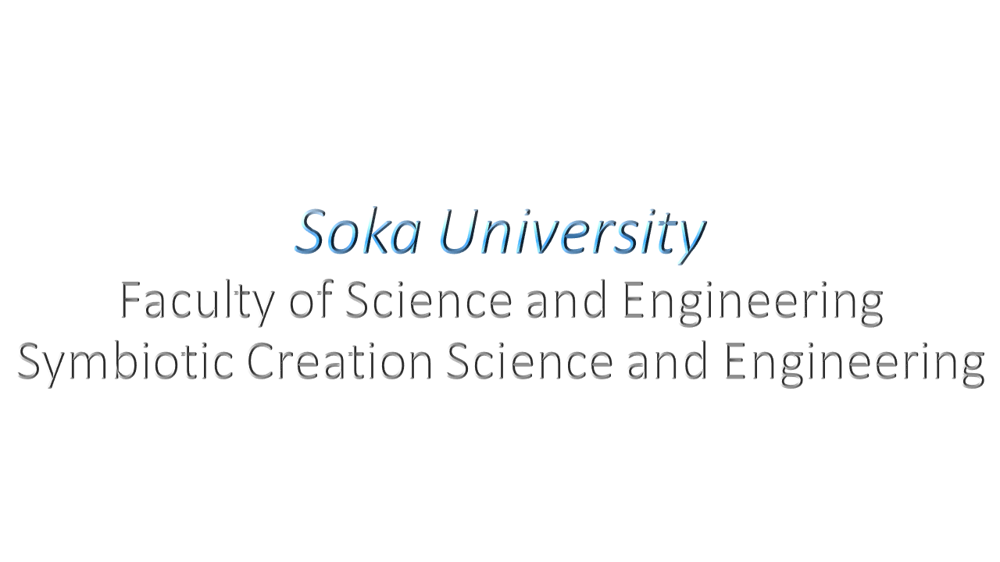

1、どんなやつか
現在最も期待され一部実用化が始まった生分解性プラスチックの多くがこの化学合成系生分解性プラスチックである。2、どんなものがあるか＋構造
source:Wikipedia
 ポリ乳酸（PLA）
source:株式会社 東ソー分析センター
ポリブチレンサクシネート系(PBS，PBSA)
source:株式会社 東ソー分析センター
 ポリビニルアルコール(PVA) source:コトバンク
 ポリブチレンアジペートテレフタレート(PBAT) source:株式会社 東ソー分析センター
ポリグリコール酸(PGA) source:Wikipedia3、生産方法
ここからは生分解性プラスチックの中でも代表的なポリ乳酸を例に説明していこうと思う。 下図はバイオます原料からポリ乳酸を製造するプロセスを示したものである。
source:石油に依存しない高分子,ポリ乳酸をつくる
余剰の澱粉資源（主としてとうもろこし由来）を糖化後、発酵して乳酸を得ている。そして、その乳酸を化学的な重合によりポリ乳酸が合成されプラスチックとして利用されている。 まず、ポリ乳酸には光学異性体が存在し、それぞれD-乳酸（R体）とL-乳酸（S体）がある。また、それらの１：１混合物であるセラミのDL-乳酸（RS体）は光学異性体とは異なった性質を示す。
次に、乳酸の製造方法だが、光学活性のD-及びL-乳酸は乳酸菌による発酵により合成される。それに対し、DL-乳酸は化学合成により製造される。4、分解条件
続いても、ポリ乳酸を例に化学合成系生分解性プラスチックの生分解について説明する。 実際にどのように分解されるかはあまり知られていないが、PLA（ポリ乳酸）分解のメカニズムについて整理すると、下図のようになる。

source:Nature3D横軸が日数、縦軸がPLAの分子量、右の縦軸は分解に伴って放出される二酸化炭素の割合である。PLAの分解は二段階で進行し、一段階目に加水分解（黄色矢印部）、二段回目に生分解（青色矢印部）である。まず、一段階目の加水分解だが、意図的に加水分解を起こそうとすると60℃以上の温度が必要になる。自然に近い環境で60℃を超える条件となるのはコンポスト（下図）くらいである。

source:Nature3D コンポスト条件でないとPLAは分解せず、普通のプラスチックと同じように環境中に残り続けるため、石油系のプラスチックと変わらない。よって、コンポストで処理をしないのならば、安易に環境中に投棄すべきではないと言える。 加水分解が起きると、PLA分子の分子量が下がっていき、ポリ乳酸が乳酸に近づいていく。分子量が１万くらいになると二段回目の微生物による生分解が起こる。微生物の成分回によって乳酸やオリゴマーが分解されはじめ、最終的には二酸化炭素と水になり分解が完了する。５、使用方法
食品用トレイ、農業用フィルム、家電製品のパーツ類、自動車用のパーツ 携帯電話やパソコンの外装もPLA樹脂で作ることが可能。３Dプリンターの材料としても使用が開始されている。このようにPLA樹脂は新たな時代のプラスチック素材として多くの可能性を秘めている素材である。６、問題点＆改善点
「生分解性を高める」ことは、「物性の安定性を落とす」ことにつながる。プラスチックが普及した「物性の安定性」は「生分解性」とトレードオフの関係にあるため、生分解性プラスチックは物性の安定性が低いことが課題。参考文献及び画像引用
ウィキペディア 株式会社 東ソー分析センター 株式会社 東ソー分析センター コトバンク 株式会社 東ソー分析センター ウィキペディア MRI三菱総合研究所 環境展望台 